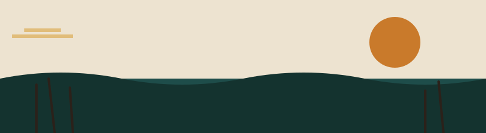

Ngapi tupu?
"How's it going?" — one of the first things you'll learn to say.
This site is a small, growing introduction to Rukwangali, a Bantu language spoken along the Kavango River in northeastern Namibia, and to the everyday life and culture of the people who speak it.

Why Rukwangali?
Rukwangali is my native language, spoken by the Vakwangali people of the Kavango region. Like many African languages, it carries oral history, proverbs, and humor that don't always survive translation. This site is a small effort to document and share it.
What you'll find here
The Phrasebook page is an interactive, filterable collection of everyday phrases — greetings, family terms, numbers, and proverbs — each with an example of how it's actually used. The Community page shares more about Kavango culture and lets you get in touch.